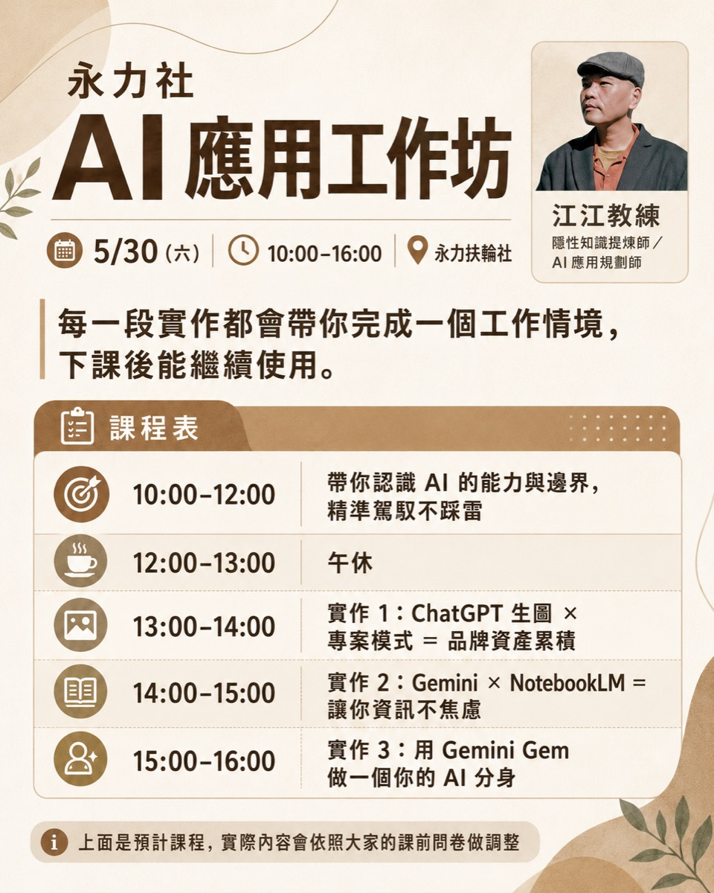
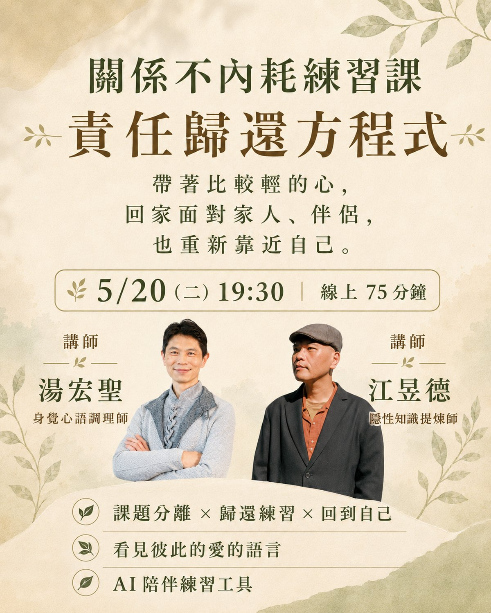
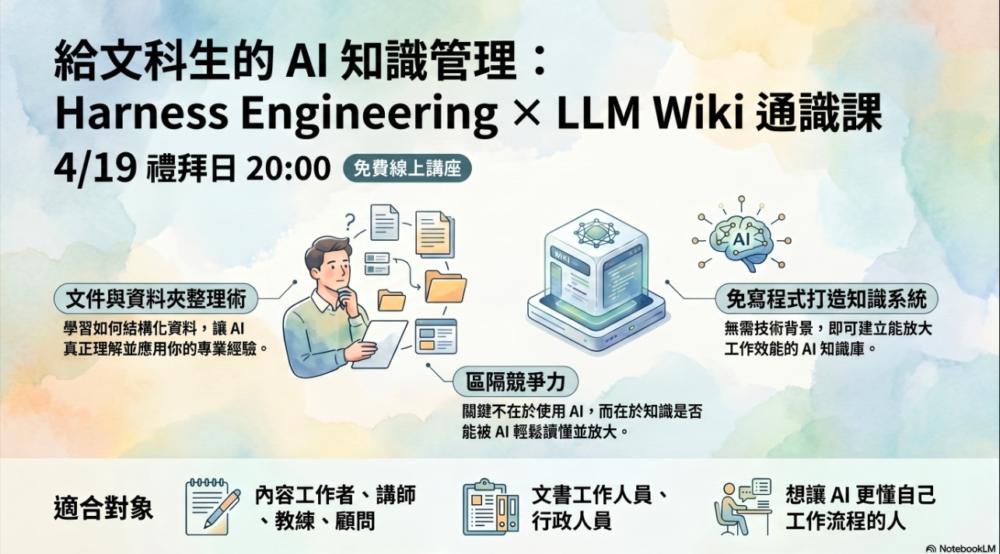
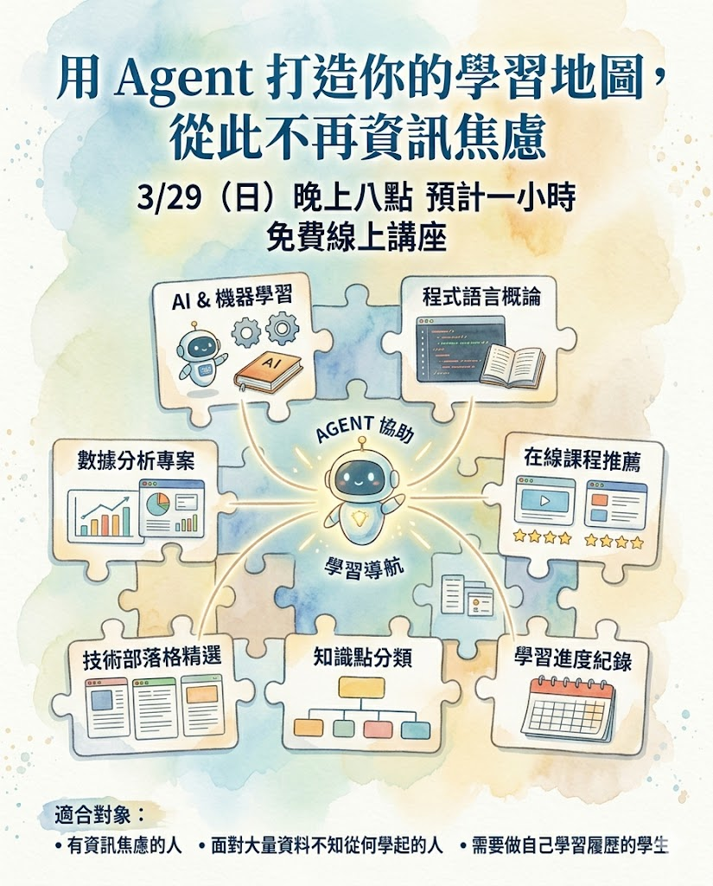

課後簡報與範例
公開可參考






把書、影片、PDF 變成你的 AI 顧問
用 ChatGPT、NotebookLM、Claude Skills 把書、影片、PDF 轉成 24 小時隨傳隨到的 AI 顧問，還能反過來幫你找盲點。

給文科生的 Harness Engineering × LLM Wiki 通識課
把工程界的 Harness Engineering 跟 LLM Wiki 兩個概念用文科生聽得懂的方式講清楚。Agent、知識管理、駕馭工程的入門。

教學文章與短分享
持續更新即將補上
下一批要整理的資源
- 歷次免費線上講座的逐字稿摘要與重點整理（30+ 場）
- AI 工具教學的 cheat sheet（Claude / ChatGPT / Gemini / NotebookLM / Codex）
- 知識管理方法論（標籤連結法、3X4 資料整理法、隱性知識提煉系統）的入門指引
- 給特定族群的學習地圖（講師、顧問、一人公司、自由工作者、學生）